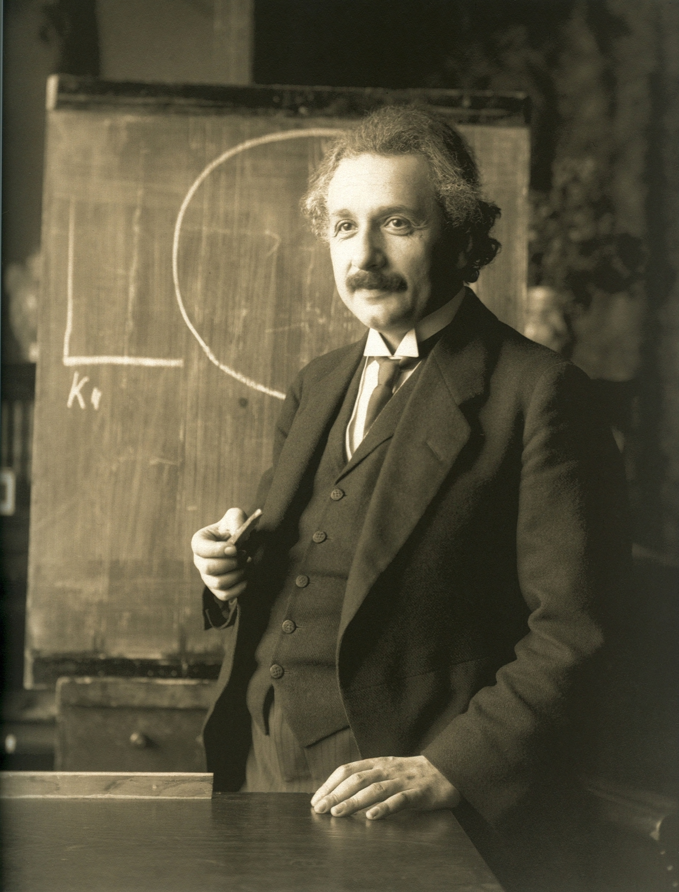

Albert Einstein (/ˈaɪnstaɪn/ EYEN-styne;[6] German: [ˈalbɛʁt ˈʔaɪnʃtaɪn] (listen); 14 March 1879 – 18 April 1955)
was a German-born theoretical physicist,[7] widely acknowledged to be one of the greatest and most influential
physicists of all time. Einstein is best known for developing the theory of relativity, but he also made important
contributions to the development of the theory of quantum mechanics. Relativity and quantum mechanics are together
the two pillars of modern physics.[3][8] His mass–energy equivalence formula E = mc2, which arises from relativity
theory, has been dubbed "the world's most famous equation".[9] His work is also known for its influence on the
philosophy of science.[10][11] He received the 1921 Nobel Prize in Physics "for his services to theoretical physics,
and especially for his discovery of the law of the photoelectric effect",[12] a pivotal step in the development of
quantum theory. His intellectual achievements and originality resulted in "Einstein"
becoming synonymous with "genius".[13]

Nikola Tesla (/ˈtɛslə/ TESS-lə; Serbian Cyrillic: Никола Тесла,[2] pronounced [nǐkola têsla];[a] 10 July
[O.S. 28 June] 1856 – 7 January 1943) was a Serbian-American[5][6][7] inventor, electrical engineer, mechanical
engineer, and futurist best known for his contributions to the design of the modern alternating current (AC)
electricity supply system.[8] Born and raised in the Austrian Empire, Tesla studied engineering and physics
in the 1870s without receiving a degree, gaining practical experience in the early 1880s working in telephony and
at Continental Edison in the new electric power industry. In 1884 he emigrated to the United States, where he became
a naturalized citizen. He worked for a short time at the Edison Machine Works in New York City before he struck out
on his own. With the help of partners to finance and market his ideas, Tesla set up laboratories and companies
in New York to develop a range of electrical and mechanical devices. His alternating current (AC) induction motor
and related polyphase AC patents, licensed by Westinghouse Electric in 1888, earned him a considerable amount of
money and became the cornerstone of the polyphase system which that company eventually marketed.
Attempting to develop inventions he could patent and market, Tesla conducted a range of experiments with mechanical
oscillators/generators, electrical discharge tubes, and early X-ray imaging. He also built a wireless-controlled
boat, one of the first-ever exhibited. Tesla became well known as an inventor and demonstrated his achievements to
celebrities and wealthy patrons at his lab, and was noted for his showmanship at public lectures. Throughout the
1890s, Tesla pursued his ideas for wireless lighting and worldwide wireless electric power distribution in his
high-voltage, high-frequency power experiments in New York and Colorado Springs. In 1893, he made pronouncements
on the possibility of wireless communication with his devices. Tesla tried to put these ideas to practical use in
his unfinished Wardenclyffe Tower project, an intercontinental wireless communication and power transmitter, but
ran out of funding before he could complete it.[9]
Sir Isaac Newton PRS (25 December 1642 – 20 March 1726/27[a]) was an English mathematician, physicist, astronomer,
alchemist, theologian, and author (described in his time as a "natural philosopher"), widely recognised as one of
the greatest mathematicians and physicists of all time and among the most influential scientists. He was a key
figure in the philosophical revolution known as the Enlightenment. His book Philosophiæ Naturalis Principia
Mathematica (Mathematical Principles of Natural Philosophy), first published in 1687, established classical
mechanics. Newton also made seminal contributions to optics, and shares credit with German mathematician Gottfried
Wilhelm Leibniz for developing infinitesimal calculus.
In the Principia, Newton formulated the laws of motion and universal gravitation that formed the dominant
scientific viewpoint until it was superseded by the theory of relativity. Newton used his mathematical
description of gravity to derive Kepler's laws of planetary motion, account for tides, the trajectories of
comets, the precession of the equinoxes and other phenomena, eradicating doubt about the Solar System's
heliocentricity. He demonstrated that the motion of objects on Earth and celestial bodies could be accounted
for by the same principles. Newton's inference that the Earth is an oblate spheroid was later confirmed by the
geodetic measurements of Maupertuis, La Condamine, and others, convincing most European scientists of the
superiority of Newtonian mechanics over earlier systems.
Newton built the first practical reflecting telescope and developed a sophisticated theory of colour based
on the observation that a prism separates white light into the colours of the visible spectrum. His work on
light was collected in his highly influential book Opticks, published in 1704. He also formulated an empirical
law of cooling, made the first theoretical calculation of the speed of sound, and introduced the notion of
a Newtonian fluid. In addition to his work on calculus, as a mathematician Newton contributed to the study
of power series, generalised the binomial theorem to non-integer exponents, developed a method for approximating
the roots of a function, and classified most of the cubic plane curves.
Newton was a fellow of Trinity College and the second Lucasian Professor of Mathematics at the University
of Cambridge. He was a devout but unorthodox Christian who privately rejected the doctrine of the Trinity.
He refused to take holy orders in the Church of England unlike most members of the Cambridge faculty of the
day. Beyond his work on the mathematical sciences, Newton dedicated much of his time to the study of alchemy
and biblical chronology, but most of his work in those areas remained unpublished until long after his death.
Politically and personally tied to the Whig party, Newton served two brief terms as Member of Parliament for
the University of Cambridge, in 1689–1690 and 1701–1702. He was knighted by Queen Anne in 1705 and spent the
last three decades of his life in London, serving as Warden (1696–1699) and Master (1699–1727) of the Royal
Mint, as well as president of the Royal Society (1703–1727).